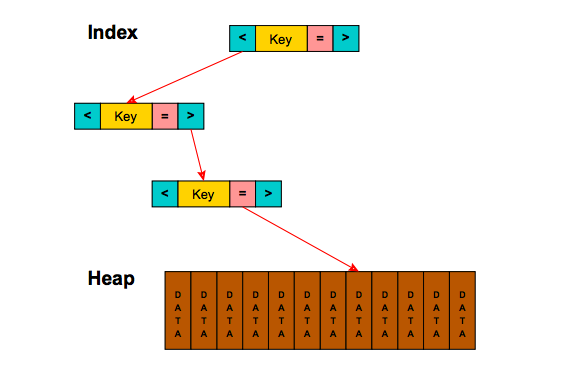
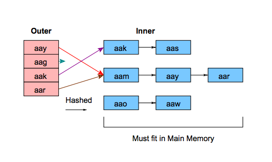
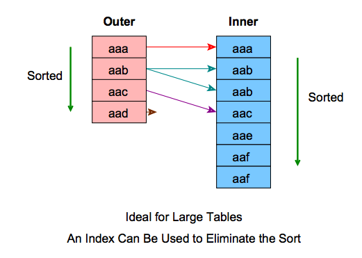

üêª
+++
+++
Set or modify transaction names:
ruby
def contacts_results(search_term, tags, page_number: 0, paginate: true)
transaction_name = NewRelic::Agent.get_transaction_name
if search_term.blank?
NewRelic::Agent.set_transaction_name("#{transaction_name} - empty")
elsif UserConfig.value_for_user_id_and_key(@user.id, 'experimental-search').to_b
NewRelic::Agent.set_transaction_name("#{transaction_name} - experimental")
elsif search_term.split(/\s+/).length > 3
NewRelic::Agent.set_transaction_name("#{transaction_name} - long")
end
+++
Measure a block:
```ruby include ::NewRelic::Agent::MethodTracer
self.traceexecutionscoped(['MessageThreadTagsController/logworkaction']) do logworkaction(:messagethreadtagged, messagethreadtag, clientcreatedat: nil, threadid: params[:messagethreadid].toi) end ```
+++
Split out a method:
ruby
add_method_tracer :contacts_results, 'ClientSearch/contacts_results'
+++
[notes]
+++
!debug
[demo]
Custom commands:
dp | epBenchmark
```ruby
rails> Benchmark.bm do |x| * x.report { User.find(2) } * end user system total real 0.020000 0.010000 0.030000 ( 0.031872)
rails> Benchmark.realtime { User.find 2 } => 0.004197215981548652
```
+++
RubyProf
```ruby
result = RubyProf.profile { AgentState.event_loop } printer = RubyProf::CallStackPrinter.new(result) printer.print(open("./profile2.html", "w"))
$> open profile2.html
```
üåù
select, map, group_by v. for loopsSEQUEL) -> SQL+++
Given sets X1 , S1, S2, . . , S, (not necessarily distinct), R is a relation on these n sets if it is a set of ntuples each of which has its first element from S1, its second element from Sz , and so on.
+++
xid)(xmin, xmax)xid IN [xmin, xmax]INSERT: create version with xmin = xidDELETE: create version with xmax = xidCOMMIT: set committed[xid] = true+++
VACUUM cleans these upauto_vacuum. Tuning frequency of vacuuming (& analyzing) is a
big deal for perf+++
xid is 32-bit integer (2^32 = 4 billion)xmin > xid and become visible üí•VACUUM FREEZE to set xmin to sentinel valueCOMMIT, write a binary log of the changes made to dataRegularly checkpoint, ie. flush to durable storage
Crash recovery: find last checkpoint and replay
+++
Logs are tables in motion -- Jay Kreps
cf. Streams (Kafka/Kinesis etc.)
üê°
ActiveRecord, arel etc(Pat Shaughnessy)
+++
+++

üëæ
+++

+++
+++
+++
Replace Views with underlying query tree
+++
üìå
+++
+++
postgresql.conf
``` seqpagecost = 1.0 # Read 8K Page from disk sequentially randompagecost = 4.0 # Random I/O cputuplecost = 0.01 # Process a row cpuindextuplecost = 0.005 # Process an index entry cpuoperator_cost = 0.0025 # Perform an operation
```
Goal: Find a good plan fast enough so that it actually matters
+++
ANALYZE updates statisticsauto_vacuum runs ANALYZE
n_distinct,most_common_vals (and their frequencies),histogram_bounds (distribution of values)üëé Assumes independence of columns
+++
ü•ë

+++
(when selectivity is low)

+++
```sql explain analyze select id from users where id is not null;
Seq Scan on users (cost=0.00..992.41 rows=3241 width=4) Filter: (id IS NOT NULL) ```
+++
(when selectivity is high)

+++
```sql explain select id from users where id=2;
Index Only Scan using users_pkey on users (cost=0.28..8.30 rows=1 width=4) Index Cond: (id = 2)
```
+++
üç© Index-only scans: when all columns involved are indexed
```sql explain select * from users where id=2;
Index Scan using users_pkey on users (cost=0.28..8.30 rows=1 width=1713) Index Cond: (id = 2) ```
+++
(when selectivity is intermediate)

+++
```sql
explain select * from users where id > 20 and id < 50;
Bitmap Heap Scan on users (cost=4.53..89.50 rows=24 width=1713) Recheck Cond: ((id > 20) AND (id < 50)) -> Bitmap Index Scan on users_pkey (cost=0.00..4.52 rows=24 width=0) Index Cond: ((id > 20) AND (id < 50))
```
üî¨
EXPLAINEXPLAIN: plan + estimated costsEXPLAIN ANALYZE: plan + estimated costs + actual costs after executionEXPLAIN (ANALYZE, COSTS, VERBOSE, BUFFERS, FORMAT JSON) : more stats about
how much data was read etc.+++
```
(cost=4.53..89.50 rows=24 width=1713)
(actual time=0.007..0.133 rows=100 loops=1)
```
+++
show default_statistics_target
100
``` SELECT attname, attstattarget FROM pgattribute WHERE attrelid = 'entryproperties'::regclass;
entryid 10000 schemaid 10000 serialized_value 10000 ...
```
ALTER TABLE SET STATISTICS
+++

(small tables)
+++

+++

+++

ORDER BY)GROUP BY)WITH) -- üò≤ optimization fences
enable_bitmapscan = on
enable_hashagg = on
enable_hashjoin = on
enable_indexscan = on
enable_indexonlyscan = on
enable_material = on
enable_mergejoin = on
enable_nestloop = on
enable_seqscan = on
enable_sort = on
enable_tidscan = on
ANALYZE, VACUUMüöó
+++
+++
DISTKEY & DISTSTYLEDISTKEY)JOIN keys should be diststyle=KEYALL+++
SORTKEYSORTKEYüêù
(eg. Hive, Presto)
+++
mappers or reducers+++
+++
+++
+++
reduce() to each group (already sorted)+++

+++
WHERE = mapORDER BY = sortGROUP BY = reduceJOIN = hash partition on join keys and merge join